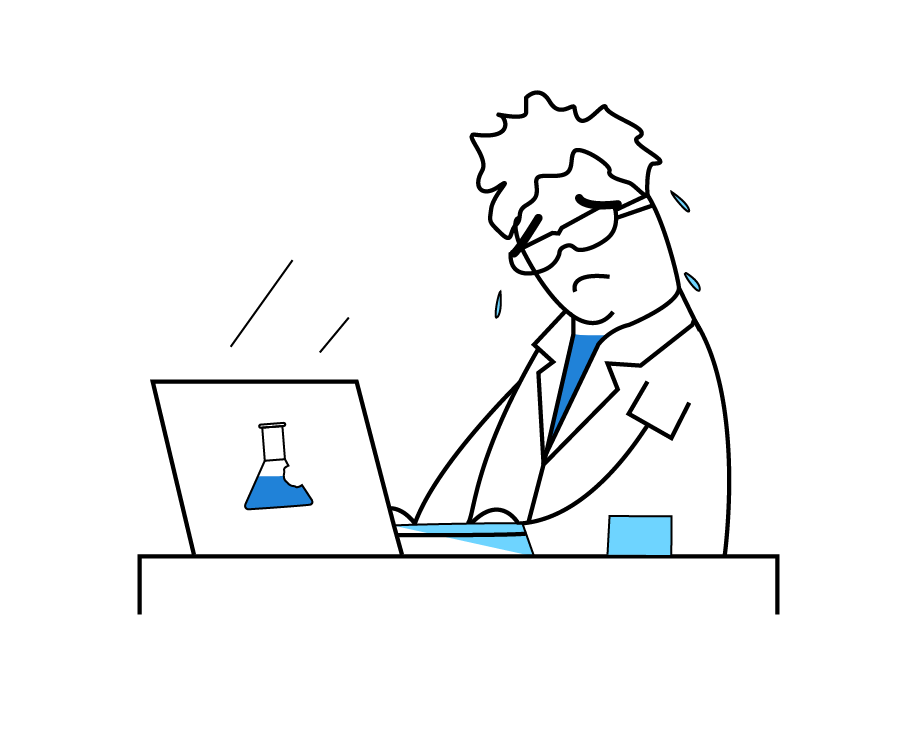

Next generation solution in chromatogram processing
- ✓ Keep samples from all vendors in one database
- ✓ Analyze hundreds of chromatograms quickly
- ✓ Open chromatograms right in your browser
- ✓ Share your results via a web link
- ✓ Fetch data for mining, integrate with other tools

Keep up with synthesis
High Throughput Experimentation (HTE) and High Throughput Screening (HTS) generate huge number of samples. Analyzing them using traditional tools takes hours if not days. Peaksel's batch-level QC, quick navigation and batch editing drastically shorten this time, sometimes to minutes.
Data at your fingertips
Peaksel provides a searchable database that allows you to quickly get access to previous results. Not only for you, but for anyone on your team.

One tool to rule them all
Keep terabytes of chromatographic data from all your vendors and all instrument types in a single database. Use web browser to analyze, modify and share them with colleagues.